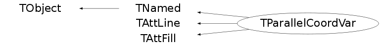

class TParallelCoordVar: public TNamed, public TAttLine, public TAttFill
Axes:
Class containing a variable for the TParallelCoord.
Options can be defined each axis separatly using the right mouse click. These options can be applied to every axes using the editor.
- Axis width: If set to 0, the axis is simply a line. If higher, a color histogram is drawn on the axis.
- Axis histogram height: If not 0, a usual bar histogram is drawn on the plot.
The order in which the variables are drawn is essential to see the clusters. The axes can be dragged to change their position. A zoom is also available. The logarithm scale is also available by right clicking on the axis.
Function Members (Methods)
public:
protected:
| virtual void | TObject::DoError(int level, const char* location, const char* fmt, va_list va) const |
| void | TObject::MakeZombie() |
Data Members
public:
| enum { | kLogScale | |
| kShowBox | ||
| kShowBarHisto | ||
| }; | ||
| enum TObject::EStatusBits { | kCanDelete | |
| kMustCleanup | ||
| kObjInCanvas | ||
| kIsReferenced | ||
| kHasUUID | ||
| kCannotPick | ||
| kNoContextMenu | ||
| kInvalidObject | ||
| }; | ||
| enum TObject::[unnamed] { | kIsOnHeap | |
| kNotDeleted | ||
| kZombie | ||
| kBitMask | ||
| kSingleKey | ||
| kOverwrite | ||
| kWriteDelete | ||
| }; |
protected:
| Color_t | TAttFill::fFillColor | fill area color |
| Style_t | TAttFill::fFillStyle | fill area style |
| Color_t | TAttLine::fLineColor | line color |
| Style_t | TAttLine::fLineStyle | line style |
| Width_t | TAttLine::fLineWidth | line width |
| TString | TNamed::fName | object identifier |
| TString | TNamed::fTitle | object title |
private:
| Double_t | fHistoHeight | Histogram Height. |
| Int_t | fHistoLW | Line width used to draw the histogram line. |
| TH1F* | fHistogram | ! Histogram holding the variable distribution. |
| Int_t | fId | Id identifying the variable for the editor. |
| Double_t | fMaxCurrent | Current used maximum. |
| Double_t | fMaxInit | Memory of the maximum when first initialized. |
| Double_t | fMean | Average. |
| Double_t | fMed | Median value (Q2). |
| Double_t | fMinCurrent | Current used minimum. |
| Double_t | fMinInit | Memory of the minimum when first initialized. |
| Int_t | fNbins | Number of bins in fHistogram. |
| Long64_t | fNentries | Number of stored entries values. |
| TParallelCoord* | fParallel | Pointer to the TParallelCoord which owns the TParallelCoordVar. |
| Double_t | fQua1 | First quantile (Q1). |
| Double_t | fQua3 | Third quantile (Q3). |
| TList* | fRanges | List of the TParallelRange owned by TParallelCoordVar. |
| Double_t* | fVal | ![fNentries] Entries values for the variable. |
| Double_t | fX1 | x1 coordinate of the axis. |
| Double_t | fX2 | x2 coordinate of the axis. |
| Double_t | fY1 | y1 coordinate of the axis. |
| Double_t | fY2 | y2 coordinate of the axis. |
Class Charts
{kind=link}
{kind=link}
{kind=link}
{kind=link}

Function documentation
TParallelCoordVar(Double_t* val, const char* title, Int_t id, TParallelCoord* gram)
Bool_t Eval(Long64_t evtidx, TParallelCoordSelect* select)
Check if the entry is within the range(s) of "select". Two ranges on a single axis are conjugated as a "or": to be selected, the entry must be in one of the ranges.
void GetEntryXY(Long64_t n, Double_t& x, Double_t& y)
Get the position of the variable on the graph for the n'th entry.
Int_t GetEntryWeight(Long64_t evtidx)
Get the entry weight: The weight of an entry for a given variable is the bin content of the histogram bin the entry is going through.
void GetXYfromValue(Double_t value, Double_t& x, Double_t& y)
Get a position corresponding to the value on the axis.
void SavePrimitive(ostream& out, Option_t* options)
Save the TParallelCoordVar as a macro. Can be used only in the context of TParallelCoord::SavePrimitive (pointer "TParallelCoord* para" is defined in TParallelCoord::SavePrimitive) with the option "pcalled".
void SetCurrentLimits(Double_t min, Double_t max)
Set the limits within which one the entries must be painted.
void SetLiveRangesUpdate(Bool_t on)
If true, the pad is updated while the motion of a dragged range.
void SetX(Double_t x, Bool_t gl)
Set the X position of the axis in the case of a vertical axis. and rotate the axis if it was horizontal.
void SetY(Double_t y, Bool_t gl)
Set the Y position of the axis in the case of a horizontal axis. and rotate the axis if it was vertical.
void AddRange(TParallelCoordRange* range)